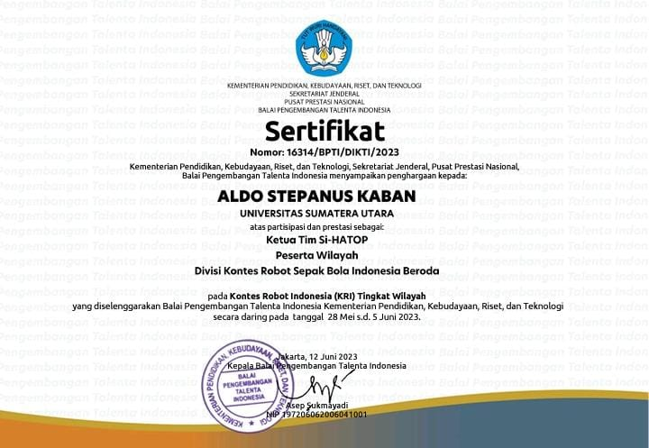
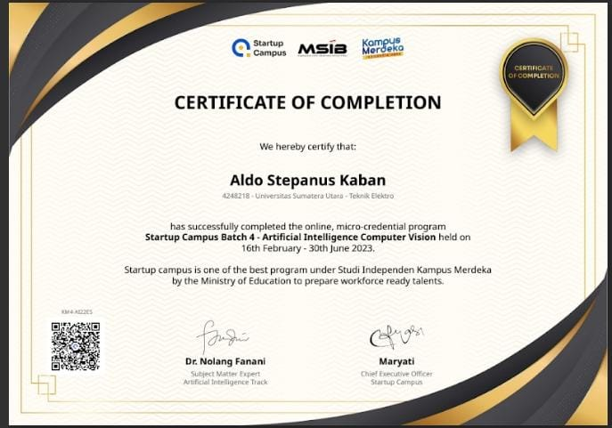
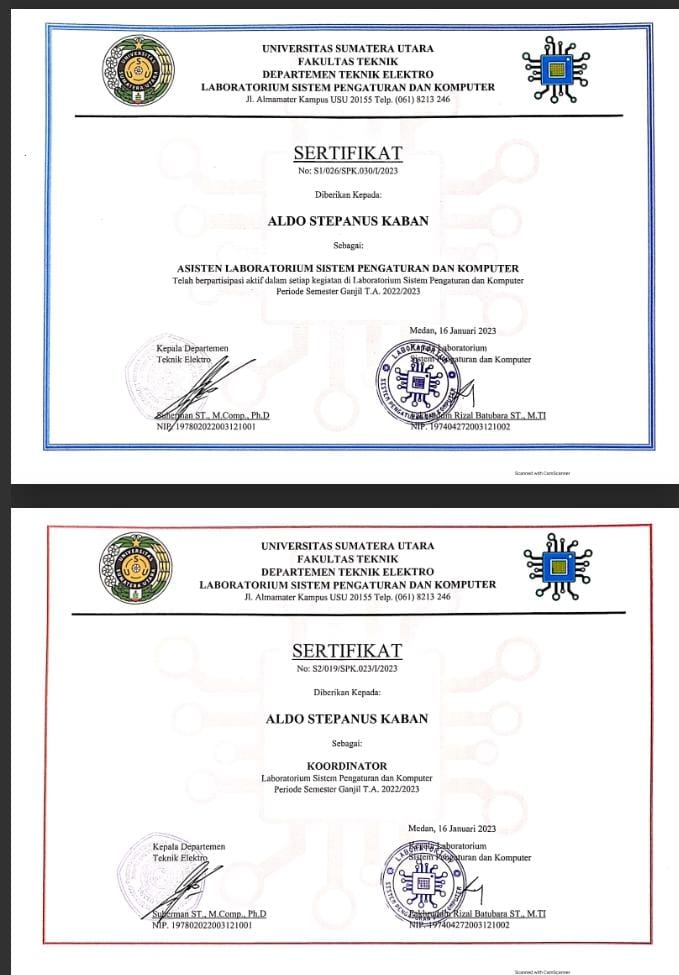
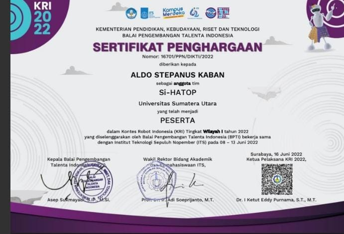

Profile
Selamat datang di website

Tempat, Tanggal Lahir: Medan, 30 September 2002
Alamat: Jl. Dr Wahidin no 41, Sumatera Utara
Email: aldokaban30@email.com
Telepon: 085961194998
Social Media
Experience
- Artificial Inteligent Track Talent, StartUp Campus (02/2023-06/2023)
- Berpartisipasi dalam program pelatihan yang mempelajari mengenai Artificial Inteligence (AI) yang dimana berfokus pada Computer Vision (CV)
- Belajar mengenai variasi dari Artifial Inteligence seperti dimulai dari belajar basic Python, Data Science, Machine Learning, Deep Learning, Computer Vision, dan Natural Languange Processing.
- Asisten Laboratorium Sistem Pengaturan dan Komputer, Departemen Teknik Elektro, Universitas Sumatera Utara (09/2022-Sekarang)
- Memberikan materi kepada para praktikkan dam juga membimbing dalam percobaan modul praktikkum dimana ada 5 modul praktikkum yaitu Sistem Digital, Sistem Mikroprosessor, Sistem Tertanam, Sistem Kendali, Komputasi Numerik dan simbolik.
- Melakukan Penlitian, perancangan dan pengembangan modul praktikkum yang berada di Laboratorium
- Membantu Kepala Lab dalam beberapa penelitian yang berkaitan dengan pengembangan Laboratorium.
- Anggota Divisi Riset dan Pengembangan UKM ROBOTIK SIKONEK USU
- Melakukan pelatihan atau Memberikan bimbingan kepada anggota UKM baru tentang mikrokontroller seperti Arduino.
- Melakukan riset atau pengembangan terhadap teknologi yang sudah berkembang seperti tentang Internet of Things (IoT) dan Artificial Inteligence (AI).
- Ketua Tim Robot Sepak Bola Beroda Universitas Sumatera Utara (01/2023-06/2023)
- Fokus dalam Pemrograman Robot terutama pada pergerakan, kicker dan kamera agar robot bisa mengenal lingkungannya.
- Menyusun rencana atau schedule kepada masing-masing agar efektif dalam pengerjaan robot
- Membantu dalam pengerjaan mekanika atau design robot
- Liason Officer dalam event Erasmus (07/2022)
- Menyusun rencana untuk aktivitas tamu
- Menjelaskan kepada para tamu mengenai lingkungan USU dan juga fasilitas-fasilitas yang tersedia di USU
Education
- SD Swasta Katolik Diski (2008-2014)
- SMP Negeri 4 Binjai (2014-2017)
- SMA Negeri 1 Binjai (2017-2020)
- Universitas Sumatera Utara - Teknik Elektro (2020-Sekarang)
- Mempelajari tentang dasar-dasar fisika, kelistrikan dan energi terbarukan
- Mempelajari tentang Pemrograman seperti C/C++, Python, Arduino dll
- IPK 3,38
Skills
- Bahasa Pemrograman C/C++
- Melakukan pelatihan bahasa pemrograman C/C++ kepada praktikkan di Laboratorium Sistem Pengaturan dan Komputer
- Melakukan riset dengan menggunakan mikrokontroller seperti Arduino
- Bahasa Pemrograman Python
- Melakukan pelatihan bahasa pemrograman python kepada praktikkan di Laboratorium Sistem Pengaturan dan Komputer
- Melakukan pembelajaran tentang AI seperti Machine Learning, Deep Learning, Computer Vision, Data Science,dll.
- Sketchup
- Melakukan design 3D melalui software Sketchup
- Arduino
- Arduino IDE untuk environment dalam pengerjaan mikrokontroller Arduino menggunakan bahasa Arduino
- Melakukan riset seperti robotika dan IoT
EasyEDA
- Merancang simulasi rangkaian elektronika
- Design rangkaian yang akan dicetak untuk dijadikan PCB dalam pengerjaan project elektornika
Hobi
- Bermain Musik (Piano dan Gitar)
Bermain musik adalah salah kegiatan yang sangat saya sukai dan kegiatan yang paling sering saya lakukan. Saya belajar musik sejak kecil tepatnya ketika masih duduk di bangku SMP. Alat musik yang saya mampu aplikasikan yaitu Gitar dan Piano. Saya juga diberi kesempatan untuk memainkan musik di gereja. Tidak hanya sampai disitu, untuk mengembangkan terus skill saya, saya bersama teman-teman saya sering juga melakukan penampilan di cafe atau tempat-tempat lainnya. Dengan mampu memainkan musik, mampu menambah uang saku saya.
- Bermain Badminton
Adapun kegiatan yang cukup sering saya mainkan adalah bermain Badminton. Saya belajar bermain Badminton sejak saya duduk di bangku SMA. Dengan bermain Badminton, mampu menguras energi dan tenaga saya. Namun dengan rutin bermain badminton, dapat membuat badan menjadi fit.
- Berenang
Berenang merupakan kegiatan rutin mingguan yang saya lakukan. Dengan berenang,membuat tubuh terasa segar. Saya belajar berenang sejak SD sehingga sekarang saya dapat dikatakan bisa untuk berenang.
Award
- Ketua Tim Robot Sepakbola Beroda Universitas Sumatera Utara dalam Kontes Robot Indonesia 2023
- Studi Independen AI Startup Campus Computer Vision Track
- Koordinator Laboratorium Sistem Pengaturan dan Komputer
- Anggota Tim Robot Sepakbola Beroda Universitas Sumatera Utara dalam Kontes Robot Indonesia 2022
Hubungi Saya
Jika kamu ingin berdiskusi dengan saya lebih lanjut, silahkan isi form di bawah ini.